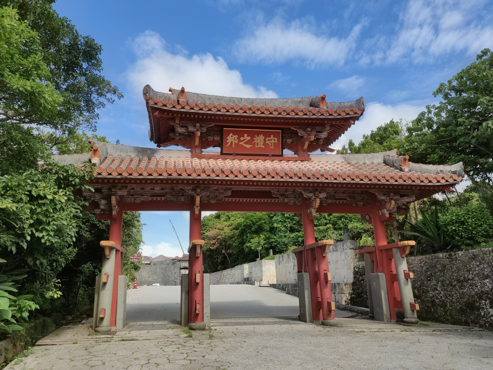

琉球考古学
サキタリ洞遺跡と世界最古の釣り針
南城市の「ガンガラーの谷」にある洞窟遺跡。2012年の発掘で、巻き貝（ニシキウズ科）の底を割って磨いた幅約1.4cmの貝製の釣り針が見つかり、2016年に約2万3000年前のものと発表された。旧石器時代の漁具が日本で見つかったのは初めてで、世界でも最古級である。
同じ地層からはオオウナギやブダイの骨、1万点を超えるモクズガニのはさみが出土した。旧石器人が川や海の幸を季節ごとに利用していたことがうかがえる。約3万年前とされる幼児の人骨も見つかっている。
港川人
八重瀬町の石切場で、実業家の大山盛保が1967年に人骨を見つけたことから調査が始まった。数体分の全身骨格がまとまって見つかり、日本の旧石器時代人を知るうえで最も重要な資料の一つとされる。
白保竿根田原洞穴遺跡
新石垣空港の建設に伴う調査で見つかった洞穴遺跡。多数の旧石器時代の人骨が出土し、年代を直接測定できた人骨としては国内最古級である。遺体を洞穴に置いて葬った、日本最古の墓域と考えられている。
貝塚時代と「貝の道」
本土の縄文時代から平安時代にあたる長い時代で、海辺の砂丘や台地に集落が営まれ、貝塚が多く残された。土器は九州の縄文土器の影響を受けつつ、島独自の形に変わっていった。
後期（本土の弥生〜平安時代）には、南の海でとれるゴホウラやイモガイの貝殻が腕輪の材料として九州へ運ばれた。この交易の流れは「貝の道」と呼ばれる。
城久遺跡群
喜界島の中央部の高台にある8つの遺跡の総称。喜界町教育委員会が2002年度から発掘し、総面積は約13万平方メートル、出土品は約5万9000点にのぼった。9世紀から15世紀にかけての遺跡で、最盛期は11世紀から12世紀前半である。
調査で分かったことは主に次の4点である。
1. 南西諸島で最大の集落 掘立柱建物の跡が450棟以上（484棟とする報道もある）、土坑墓や火葬墓が見つかった。これほど多くの建物跡が南西諸島で見つかったのは初めてである。
2. 本土の国家とのつながり 大宰府で出土するものと同じ系統の土師器が出ている。大型の建物群の周辺から越州窯系青磁など古い外来の陶磁器が出土しており、古代の日本国家の影響下にある施設があったと考えられている。12〜13世紀の屈葬墓は、本土の中世の仏教思想に基づく埋葬と同じ形式と推定されている。
3. 東シナ海の交易の拠点 越州窯系青磁、初期高麗青磁、朝鮮系の無釉陶器のほか、徳之島のカムィヤキが4000点あまり、宋銭や銅製品も出土した。11世紀後半以降に琉球・奄美にできた交易圏の中心だったと考えられている。
4. 南西諸島で最初の製鉄 12世紀の製鉄炉の跡が多数見つかった。中世の製鉄の遺構は南西諸島で初めてである。
文献では、『日本紀略』長徳4年（998）条に、大宰府が「貴駕島（喜界島）」に南蛮人の捕縛を命じた記事がある。考古学と文献の両方から南の島の社会の移り変わりを知ることができる点が評価され、2017年に国の史跡に指定された（指定名は「城久遺跡」）。
農耕の始まりとグスク
この時代に穀物の栽培が広がり、集落の規模が大きくなった。丘の上には石垣や土塁を巡らしたグスクが築かれた。グスクからは陶磁器や獣・魚の骨が大量に出土し、今も村の拝所（御嶽）として大切にされているものが多い。
徳之島で焼かれた灰色の焼き物カムィヤキや、中国の陶磁器が琉球列島の全域に広がった。グスクの城壁の発掘では、築かれた時期や改修の跡を読み取ることができる。
京の内跡の出土陶磁器
首里城の聖域「京の内」の発掘調査は、首里城の復元整備に伴って1994〜97年度に行われた。1459年の火災で焼けた倉庫跡から、14世紀中ごろ〜15世紀中ごろの陶磁器がまとまって出土し、2000年に518点が国の重要文化財に指定された。
中国の青磁・白磁・青花のほか、世界でも報告例のない元青花八宝文大合子や紅釉水注、タイ・ベトナムの陶器、日本の備前焼が含まれる。タイ産の大きな壺は、タイから届いた酒を入れて運ばれたと考えられている。カンボジアのクメール王朝のブリラム陶器も、東南アジア以外で初めて確認された。
沖縄県は、同じころに鋳られた万国津梁の鐘の銘にうたわれた「万国の津梁」として、広く交易した証拠と位置付けている。
円覚寺跡の調査
円覚寺の総門に置かれた仁王像の残欠を調べたところ、材質と作風から、創建前後に京都の院派の仏師が造った可能性が指摘された。寺の造営に芥隠承琥ら京都五山の僧のつながりが生かされたと推定されている。詳しくは首里の誕生「円覚寺」を参照。